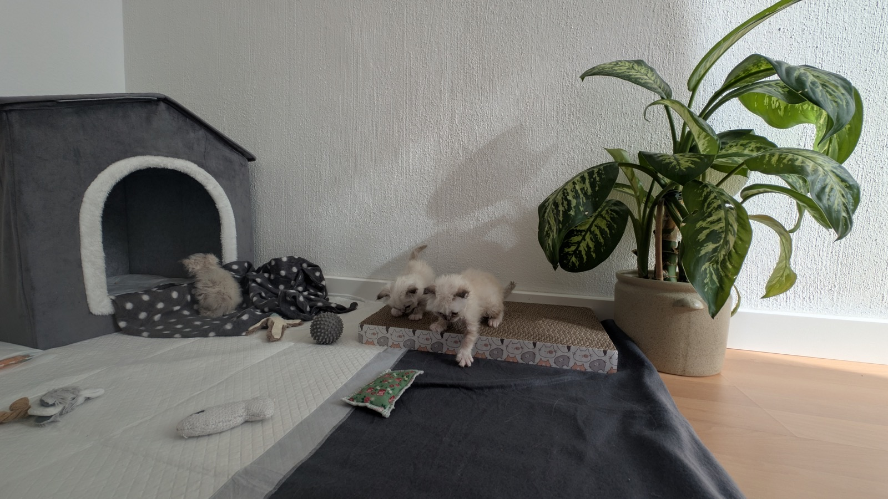
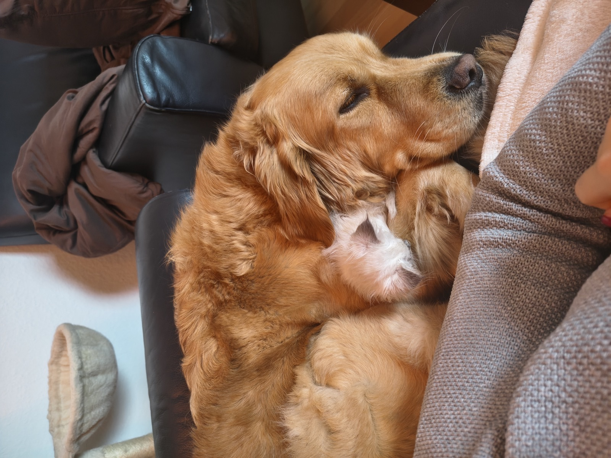
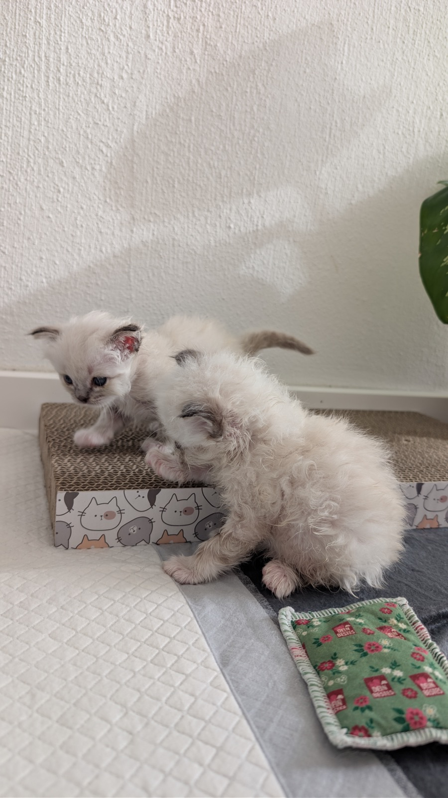
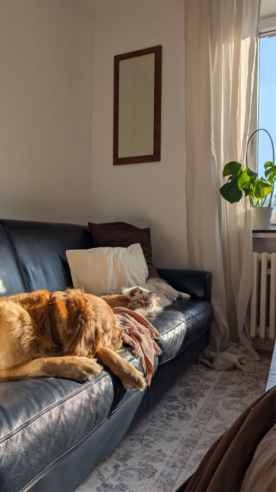
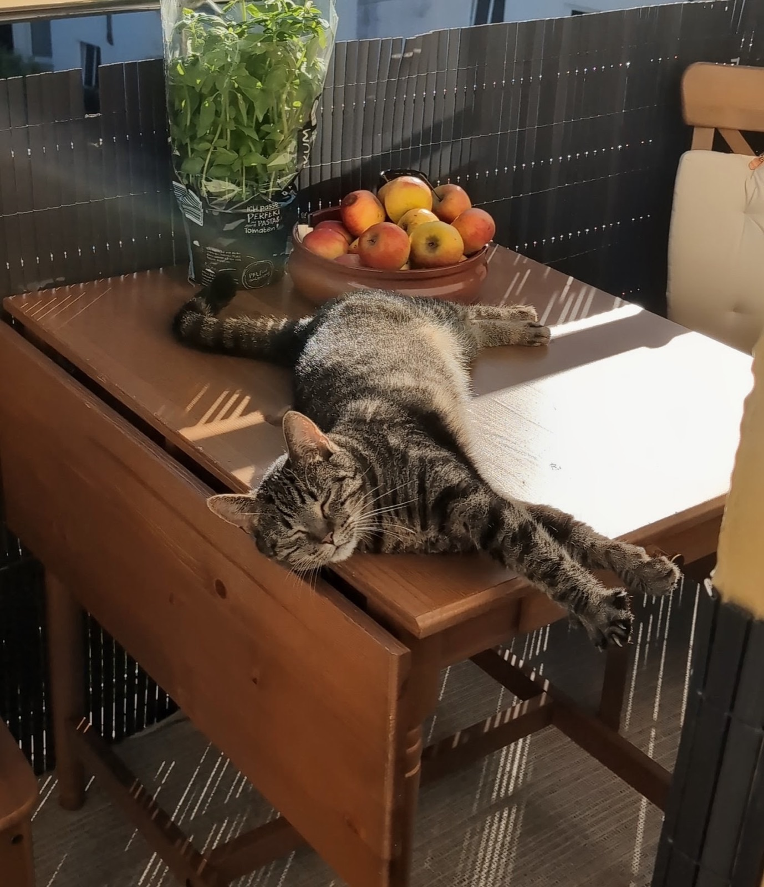
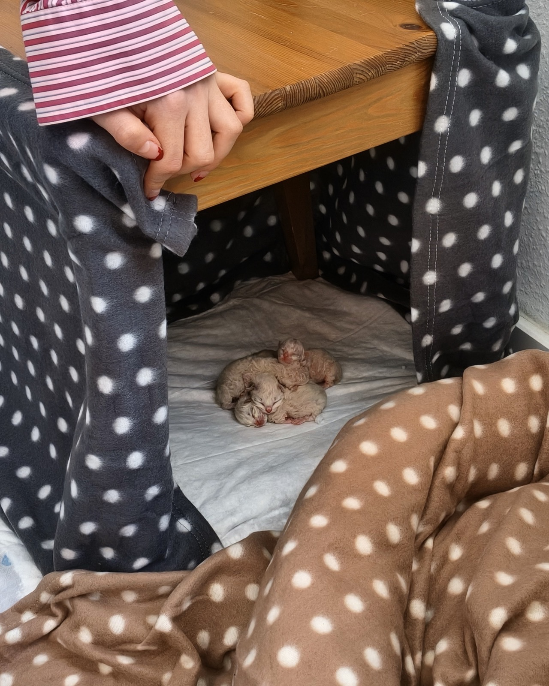
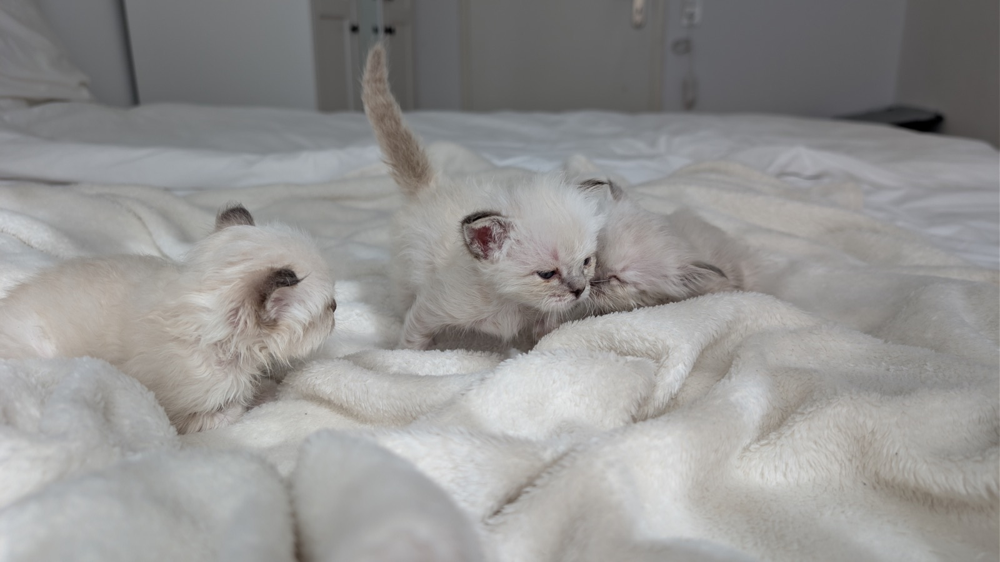

Heilige-Birma-Zucht in Trier Wie wir züchten
Eine kleine Zucht in Trier, angeschlossen an den Felidae e.V.
01
Aufzucht mitten im Leben
Unsere Kitten wachsen nicht hinter verschlossenen Türen auf – sondern mittendrin im ganz normalen Alltagschaos! Nach den ersten geschützten Wochen geht’s ab ins Getümmel! Unsere Zwerge lernen früh, dass Staubsauger nicht beißen, Hündin Willow eine prima Spielgefährtin ist und Besuch meistens Leckerlis bedeutet.





02
Wenige Würfe, viel Zeit
Wir betreiben keine Massenabfertigung. Bei uns gibt es bewusst lange Pausen für die Mutter und volle Aufmerksamkeit für den Nachwuchs. So wissen wir bei jedem Kitten ganz genau, wer die Schmusenase und wer für den Blödsinn verantwortlich ist.


03
Angeschlossen an den Felidae e.V.
Transparenz und das Wohl unserer Tiere stehen für uns an erster Stelle. Wir sind eingetragenes Mitglied im Felidae e.V. und züchten streng nach dessen Zucht- und Registrierordnung. Das bedeutet für dich: Jedes unserer Kitten zieht mit einem offiziellen, anerkannten Stammbaum und allerbester Vorsorge in sein neues Zuhause.


Kontakt